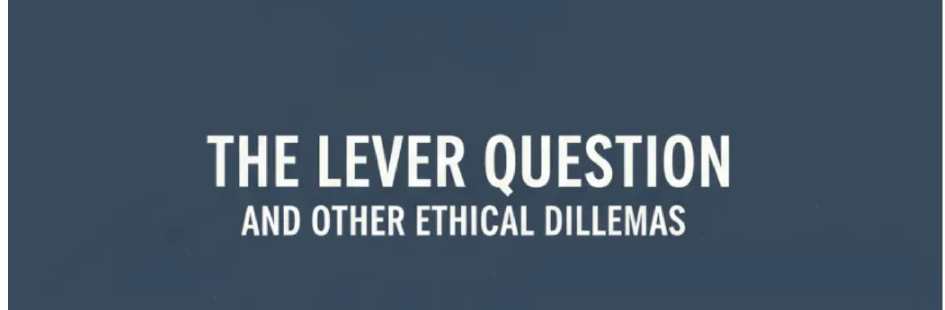
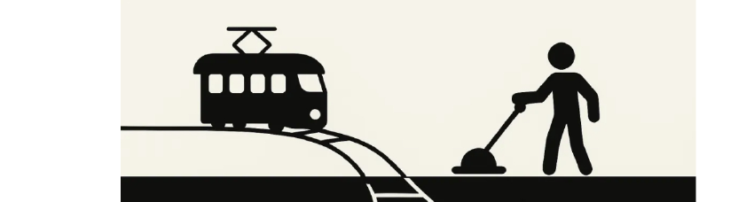
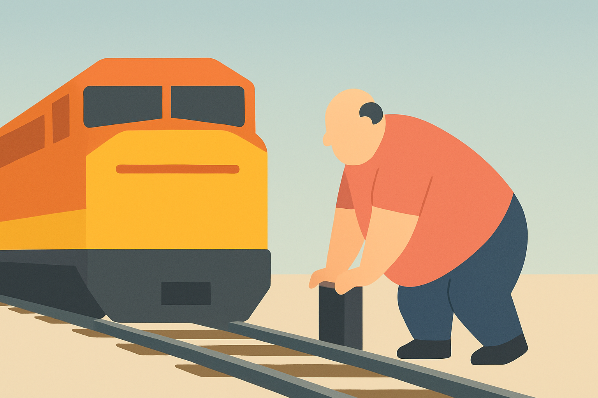
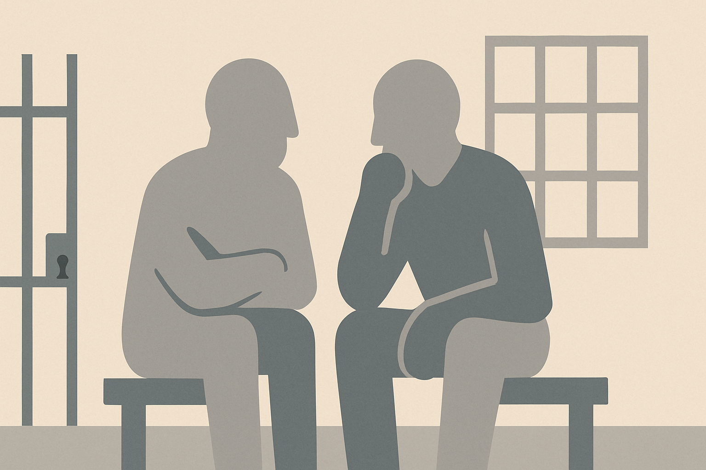
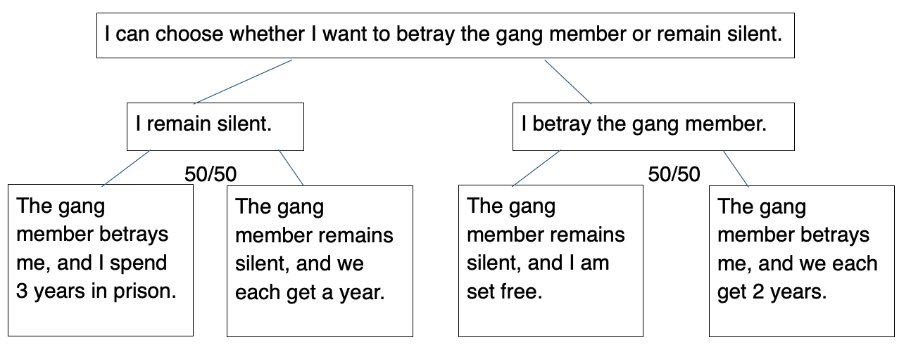
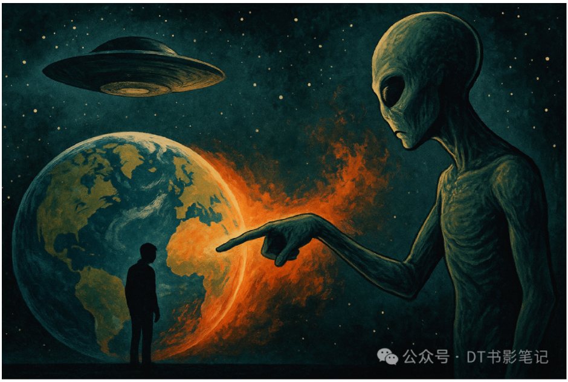
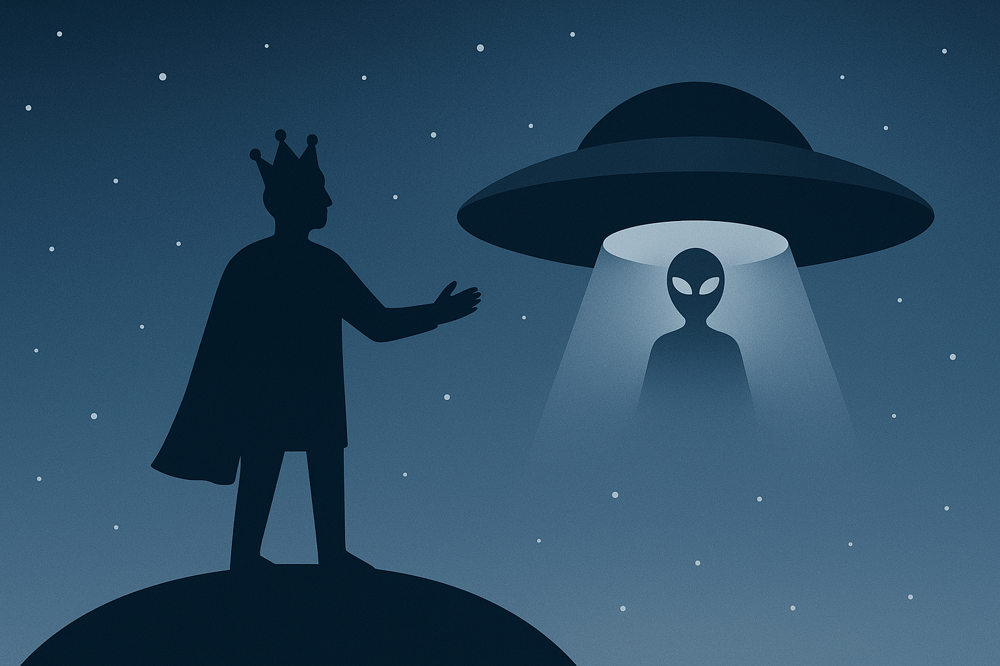
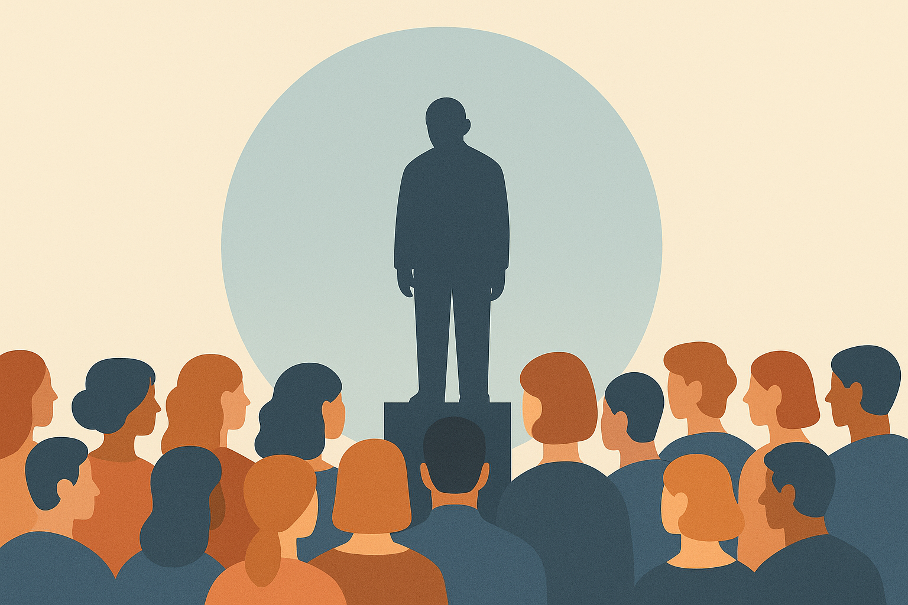

Wherever Philosophy Takes You (part 3: Ethical Dilemmas)

The lever question and other ethical dilemmas
Ethical dilemmas are a huge branch of the conversation about justice.
If the room of justice was to breach morality, an ethical dilemma is when both the ceiling and the floor are different shades of the same rightness. Who then, are we to be the ultimate deciders of another human being's fate?
Let's start with the classic ethical setting: you are at a train station, in front of two split railroad tracks. The train is heading towards one railroad track, where five people are tied to it. On the other railroad track, only one person is tied down. In front of you is a lever. If you pulled it, you would be able to redirect the route of the train towards the one person instead of the five people. Would you pull the lever?
I wouldn't pull the lever. If I did, I would have to live the rest of my life chained to the lock of guilt; if I didn't, I would be a guilty bystander rather than a guilty perpetrator. It is a selfish decision, but if there were people willing to sacrifice their moral stability for the sake of five people, I applaud them; I am not one of them. Among other reasons such as to avoid legal punishment and to ease the claws of my conscience, the answer seems clear. I do not want to decide the fate of that one person, which is what would happen if I pulled the lever. If I stood by, at least I would only become the chained witness to the fates of five people.

Here's an interesting branch of this question: There is only one railroad track, and the train is heading towards the five people. A fat man is leaning over the track in front of the train. Would you push him so that the train stops for him instead of the five people?
Ironically, most people who chose to pull the lever for the first question would not choose to push the fat man. This only goes to show how personal mentality is the main outlook for most ethical conflicts, and that considerations for future conscience usually wins out human nobility of the immediate minute.
Research interestingly enlightens me that (and I agree) the main mental reason why someone wouldn't push the fat man but would pull the lever is the difference between intending and foreseeing harm. By pushing the fat man, you are intending harm, initiating the act of it, when the natural decision would have been to do nothing. However, by pulling the trolley, your main considerations are on preventing the foreseen deaths of the five people with the death of the one person being an unfortunate side-effect. The phycological difference between initiation and prediction is just another impactful factor of queries on morality.

However, a separate trail appears: what if one of my family members, say my father, were among the five people? I'm certain my decision would have been different then; I would have pulled the lever or pushed the fat man. But that doesn't erase the lock of guilt that is sure to follow.
Personal bias dominates how we decide the ending to an ethical dilemma: my personal bias towards family members is a prevalent one, but other more controversial ones include that towards gender, race and age. Maybe there isn't supposed to be an entirely impartial solution to an ethical dilemma; for if one existed, it wouldn't be the solution to an ethical dilemma.

Here's another ethical setting to chew on: you are a member of a gang and you have been arrested alongside another gang member. You can either a) remain silent or b) betray the gang member and testify for his crime. There are three possible outcomes:
- If both you and the gang member remain silent, you both serve one year in prison.
- If you betray the gang member and he remains silent, you will be set free and he will serve 3 years in prison.
- If you both betray each other, you will serve 2 years in prison each.
What would you do? By betraying the member, a vital ethical trust is breached. But remaining silent holds the risk of additional years in prison.
If my gang would not punish me for betraying the member, I would choose the option of betrayal. Below is a flow chart of why:

By remaining silent, I will have to serve years at prison no matter the outcome. By betraying the gang member, I have a 50/50 chance of being set free, while in remaining silent, the most hopeful outcome would be one year in prison. Answering this dilemma (for me) is a comparison between:
- 1 year in prison <-->0 years in prison
- 3 years in prison<-->2 years in prison
The answer is obvious. Since both outcomes of each choice have a 50/50 chance of becoming true, the smartest choice logically would be betrayal.
On the other hand, from a moral standpoint, betrayal shatters a fragile trust and erases moral dignity. Support among members is often valued in gangs, so the lack thereof could result in personal emotional blame. Even if you were set free, your mind would not have been, entwined in the metal chain of conscience. Some would choose to remain silent simply to preserve that moral poise.
Personally, I believe that 3 years in prison (or 2) doesn't completely dismember a person's life, and since we both committed the crime and are welcome to legally betray each other, betrayal it is.
Whilst that ethical question is one of the simpler ones, here's a classic one: You and some people from your town are hiding from a gang of robbers. You know for certain that your baby will cough, and that the cough will alert the robbers, bringing on the death of the entire town. Would you kill the baby by putting a hand over his mouth?
This question cannot be considered rationally, for rationally, the answer is clear. Instead, humanoid maternal instincts must come into play, intermixed with the conflicting morality of reason and conscience. I am unable to answer this question until I experience it, for so many factors come into play: maternal dispositions, rational instincts, suddenness of the moment, parental responsibility, socialobligation, the weight of conscience, the question that if you killed your child, would you be willing to live anymore? And so on.
Some mothers wouldn't sacrifice their children even to save the world, while others would weigh their dispositions and let the need for momentary rationality sweep over them. This question is a complex query towards mothers, parents, guardians and society, a debate between reason and love.
On a separate note, by erasing the lock of maternal attachment and enlarging the subsequential consequence, a separate question emerges. (I admit that I did switch the wording around a bit): Who would you choose to sacrifice to the aliens for experiment in order to save Earth? (With full knowledge that the aliens will be able to destroy Earth, and that they intend to do so but won't ever again as long as they receive a human sacrifice.) (Also I know that this question doesn't have a lot to do with the baby dilemma, but yeah.) Who would you choose to sacrifice? How would society decide on who to sacrifice?
Personally, I would vote to sacrifice one of the serial killers or criminals from my country. It's a basic answer, but at least it weighs in more on the side of conceptual justice. As for "from my country", the detail would be preventative to global conflicts and international accusations.
As a human race, I do not know whether we are entitled to glean one of our kind simply for long-term self-preservation, but I believe that my survival instincts and fear chemicals would outweigh my love for philosophy the day aliens come to Earth.
However, looking at this philosophically, I do not believe that the human race is entitled to any other person's life. If we were, say, eagles or lions, sacrificing a runt in our nest would simply be seen as a circle of life—but that's the problem, isn't it? We see it as a circle of life. We already have the intelligence to gain perspective, knowledge and conscience. That's what separates human nature from animalistic instincts. Self-awareness. That self-awareness condemns us from unaware actions, for unaware actions are that committed by animals instead of humans, and as a self-aware species, we have the moral obligation to remain self-aware. Even if we pushed away the most human instincts inside of us, that self-awareness will haunt our speech and literature—speech, literature. The art is proof of our self-awareness. The definition of self-awareness, the fact that there is one; the sheer method in which we built our own intricate people within the center of the grand scheme called Universe—becomes proof of the conscious race that we have learned to become.

As kings of the star dust we name "Earth", it is our responsibility to wield that power with elegance and self-control, for both are virtues that self-awareness seeks, and listening to our self-awareness is the least we can do to fulfill the wish for conscience brimming inside the most of our human natures. The wish of conscience whispers to us not to sacrifice a human being, but to instead fight as one against the unbeatable. (Aliens.)
It is not in the nature of corrupt kings to become corrupt, just as it is not in our instincts to become unaware of our natures. Artists have sought to enhance that nature all of their lives, which is proof enough for the existence of such compassionate clarity. As Oscar Schindler quoted from the movie Schindler's List, "Power is when we have every justification to kill, and we don't." Conscience is when we have every reason to surrender to our own evils, and we don't.

Looking back to the ethical dilemma, maybe it is just another circle of life for us to sacrifice one of our own kind in order to save everything, but maybe human psychology and the nature of awareness has prevented any human act from ever being natural again. Maybe humankind has over-extended itself, spread its webs too wide, flown too high to the sun on her Dedalus's wings.
But then again, any other high-intelligence organism would have likely developed such thoughts and influences too; they would have sunk their nails into the flesh of Earth in order to cling tighter to an eon that they know is slipping away. As we do.
Humankind is not the sole culprit for nature's sorrow; in fact, it is arguable whether we are culprits at all. Why bother blaming the skunk for stinking when he has been triggered? We have been triggered by our intelligence, and consequently we have caused a series of exploding mines all over Earth, through the many sins of human mind—what we define as sins.
Is there anyone to blame if the result of civilization was inevitable? Are such texts like the one I'm writing now unavoidable because of humans' evolving eternity? Or is it eternity simply because we don't want it to end.
Bringing the topic back to the ethical dilemma—no, we do not have the right to let go of our self-awareness, but perhaps we could be pardoned for our more innate, animalistic urge to survive. After all, when the entire race is sinking in the gulf, we become but part of the jump.
That's enough of the philosophical aspects. Turning back to a more pragmatic view, this is how I believe our current society would react to the aliens' demand (this is assuming that we absolutely cannot beat the aliens, and that everyone absolutely know this):
- There would be ethical debates like this. People would explore the concept of human nature and argue that the sacrificing of a human being goes against it.
- Regardless of the ethical aspects, governments and the UN will come together to an urgent meeting regarding this.
- Governments will release official statements to their countries, stating that they are still working on how to go about the aliens.
- Some people will step forward as volunteers (cultists, patients with terminal diseases, valiant personalities)
- Meanwhile, governments are backhandedly involving politics in this, trying to win over political adversaries and release anti-union propaganda.
- A political selection is made. A diplomatically disliked yet powerless human being is selected, and since there is brash agreement from international organizations, he is taken by force.
- An extension on this point: I believe that there are 2 types of people the government could potentially select:
- Powerless, nameless yet subtly effectual political involvers who backhandedly survey the political scene—this choice benefits the governments.
- Criminals. However, this choice is more complex, for none of the countries would probably want to nominate their criminals in fear of international reputation. Heated debates on political factors, race and gender come to play during the selection of the criminal. This option is beneficial for ensuring that the general public doesn't directly accuse the government of involving politics.
- Personally, I find option a) more likely, since it is the one that would benefit the governments most immediately. Considerations for the public might come second in such time of need. Regardless, continue to step 7….
- An extension on this point: I believe that there are 2 types of people the government could potentially select:
- Discussions on racism, sexism and ageism etc. become involved in the selection of the human being.
- New book, movie and music releases regarding this topic become rampant. Non-profits, donations, propaganda and complaints for/against the selected human are formed.
- The Earth is thrown into chaos even after the aliens leave. Wars are potentially erupted, and international tensions become strung tight.
- Complaints about society's unfair political prioritizations are voiced. Protests become rampant in the more liberal countries, while harsher laws are reinforced in the more conservative ones.
- Society is thrown into temporary chaos; the ink of unrest only spread by the growing web of social media.
That, in my opinion, is what would happen realistically.
I honestly do like this ethical question, for it is a very interesting take on humankind's conscience and where politics come into play during times of need. Perhaps it isn't right for an entire species to condemn the fate of one, but condemn we must, and it might as well be the most rational decision in the grand scheme of things. Plus, the most stupid decision.
Something I do find interesting is that although many mothers would deny the aliens their children when such needs arose, the same people wouldn't hesitate to nominate a type of stranger in order to save themselves. This only demonstrates the importance of instinct, favor and emotional impression in the making of a moral decision. That's the beauty of an ethical dilemma, I think. The clarified look into our species as a whole, the emotional struggle against the rope of reason.

In conclusion to this very long passage, are ethical dilemmas worth discussing? Oh yeah. Do they expand on our cultural landscape and provide a fresh outlook on humankind's nature? Uh–huh. And is there a right answer to an ethical question? Doubtful, but I sincerely hope that whenever it comes down to a choice between reason and love, we will always deign to choose love.
To be continued... (next week's topic: Beauty and Love!!)
← Back to Blog